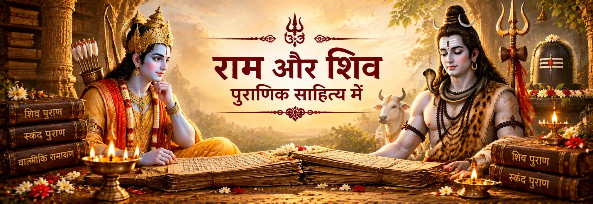

वन में शिव का राम से मिलना
शिव पुराण में शिव और सती का राम से उस समय मिलना वर्णित है जब राम सीता की खोज कर रहे होते हैं। शिव राम को पहचानकर श्रद्धा प्रकट करते हैं और यही प्रसंग सती के मन में प्रश्न उत्पन्न करता है।

शास्त्र और परंपरा
पुराण-साहित्य राम–शिव संबंध की कोई एक समान कथा प्रस्तुत नहीं करता। अलग-अलग पुराणों में अलग प्रसंग, धार्मिक दृष्टियाँ और तीर्थ-परंपराएँ मिलती हैं। साथ मिलकर ये ग्रंथ बताते हैं कि राम और शिव का संबंध एक समृद्ध भक्तिपरक परंपरा के रूप में कैसे स्मरण किया गया।
शिव पुराण में सती द्वारा राम की परीक्षा की कथा के माध्यम से राम–शिव संबंध का एक महत्वपूर्ण प्रसंग मिलता है। स्कन्द पुराण का सेतु-माहात्म्य रामेश्वर, राम की शिव-पूजा और सेतु की पवित्र भूगोल के माध्यम से एक दूसरी महत्वपूर्ण परत विकसित करता है।
शिव पुराण · रुद्रसंहिता
शिव पुराण के सती-खण्ड में एक महत्वपूर्ण प्रसंग आता है जहाँ शिव राम की दिव्यता को पहचानते हैं और सती राम के स्वरूप को लेकर प्रश्न करती हैं।
शिव पुराण में शिव और सती का राम से उस समय मिलना वर्णित है जब राम सीता की खोज कर रहे होते हैं। शिव राम को पहचानकर श्रद्धा प्रकट करते हैं और यही प्रसंग सती के मन में प्रश्न उत्पन्न करता है।
सती आश्चर्य करती हैं कि जिन्हें वे स्वयं परमेश्वर के रूप में जानती हैं, वे राम को प्रणाम क्यों करते हैं। यही प्रश्न राम की दिव्य प्रकृति को समझाने का माध्यम बनता है।
इसके बाद शिव पुराण में सती द्वारा परीक्षा लेने के लिए सीता का रूप धारण करने का वर्णन मिलता है। राम पहचान लेते हैं कि सामने सीता नहीं, सती हैं और उनके वास्तविक स्वरूप को जानते हुए उनसे संबोधित होते हैं।
यह प्रसंग एक धार्मिक बिंदु सामने रखता है—दिव्य सत्य को केवल बाहरी मानवीय रूप देखकर नहीं समझा जा सकता। कथा में राम का व्यवहार उनके गहरे दिव्य ज्ञान का संकेत बनता है।
स्कन्द पुराण · सेतु-माहात्म्य
स्कन्द पुराण का सेतु-माहात्म्य वन-प्रसंग से आगे बढ़कर तीर्थ, लिंग-स्थापना और रामेश्वरम् की पवित्र भूगोल पर केंद्रित होता है।
सेतु-माहात्म्य में राम द्वारा स्थापित लिंग के लिए रामनाथ और रामेश्वर नामों का वर्णन मिलता है। यही रामेश्वरम् की प्रमुख पवित्र स्मृतियों में से एक बनता है।
बाद में ग्रंथ राम, सीता, लक्ष्मण, सुग्रीव और अन्य प्रमुख पात्रों द्वारा लिंग-स्थापना के बाद रामनाथ की स्तुति का वर्णन करता है। यह सामूहिक भक्ति का दृश्य है।
सेतु-माहात्म्य राम की कथा को तीर्थों, गन्धमादन और रामेश्वर की पवित्र भूगोल में विस्तार देता है। इस प्रकार कथा पवित्र इतिहास के साथ तीर्थ-मार्गदर्शक रूप भी ग्रहण करती है।
स्कन्द पुराण सेतु को ऐसी पवित्र भूमि के रूप में प्रस्तुत करता है जहाँ हरि और हर दोनों के प्रति भक्ति विकसित हो सकती है। इसलिए राम–शिव संबंध प्रतिस्पर्धा के बजाय व्यापक पवित्र परंपरा का हिस्सा बनता है।
परंपरा को समझना
पुराणों का योगदान केवल नई घटनाएँ जोड़ना नहीं है। वे कथा के विस्तार और अर्थ को भी बदलते हैं। शिव पुराण शिव, सती और राम के संबंध तथा दिव्य पहचान की चर्चा करता है; स्कन्द पुराण रामेश्वरम् और सेतु को ऐसी पवित्र भूगोल में बदलता है जहाँ पूजा, तीर्थ और स्मृति एक-दूसरे से जुड़ जाते हैं।
इसीलिए राम–शिव परंपरा को एक ही कालक्रम के रूप में नहीं, बल्कि कई परतों वाली परंपरा के रूप में समझना अधिक उचित है। वाल्मीकि रामायण, शिव पुराण और स्कन्द पुराण प्रत्येक अपना योगदान देते हैं और बाद की भक्तिपरंपराएँ इन सामग्री की अलग-अलग व्याख्या करती रहती हैं।
Shiva Purana · Rudra-saṃhitā · Satī-khaṇḍa 24 · Skanda Purana · Setu-māhātmya 43 · Skanda Purana · Setu-māhātmya 44 · Skanda Purana · Setu-māhātmya 49
भक्त के लिए
पुराण भक्त को पवित्र स्मृति को जीवित परंपरा के रूप में देखने का अवसर देते हैं। राम की शिव के प्रति श्रद्धा और शिव द्वारा राम की पहचान को देवताओं की प्रतिस्पर्धा के रूप में नहीं, बल्कि ऐसी भक्तिपरक दृष्टि के रूप में देखा जा सकता है जहाँ दिव्य सत्य अलग-अलग नामों, रूपों और कथाओं के माध्यम से अनुभव किया जाता है।
भक्तों के सामान्य प्रश्न
शिव पुराण की रुद्रसंहिता के सती-खण्ड, विशेषकर अध्याय 24 में, शिव और सती के राम से मिलने का प्रसंग है और राम की दिव्यता का प्रश्न केंद्रीय बनता है।
उसका सेतु-माहात्म्य रामेश्वरम् की परंपरा को विस्तार देता है: राम रामनाथ/रामेश्वर की स्थापना करते हैं, परमेश्वर की पूजा करते हैं और सेतु क्षेत्र तीर्थों तथा तीर्थयात्रा की प्रमुख पवित्र भूगोल बन जाता है।
नहीं। अलग-अलग पुराणों में अलग प्रसंग और धार्मिक दृष्टियाँ मिलती हैं। इस पृष्ठ पर शिव पुराण और स्कन्द पुराण के उदाहरण अलग ग्रंथीय संदर्भों से आते हैं और उन्हें स्रोत के अनुसार पहचानना चाहिए।
क्योंकि राम–शिव परंपरा महाकाव्यों, पुराणों, क्षेत्रीय तीर्थ-परंपराओं और बाद के भक्तिपरक साहित्य के माध्यम से विकसित हुई। स्रोत बताने से परंपरा की समृद्धि बनी रहती है और बाद की व्याख्याओं को पुराने ग्रंथों का कथन मानने की भूल नहीं होती।